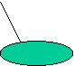

Semantic Memory
•
Hierarchical Model
(Collins & Quillian 1969, 1972)
–
Hierarchical Organization
–
Evidence:
•
“A canary is a bird” vs.
•
“A canary is an animal”
–
Problem: typicality effects
•
“A canary is a bird” vs.
•
“An emu is a bird”
animal
bird
fish
emu

canary